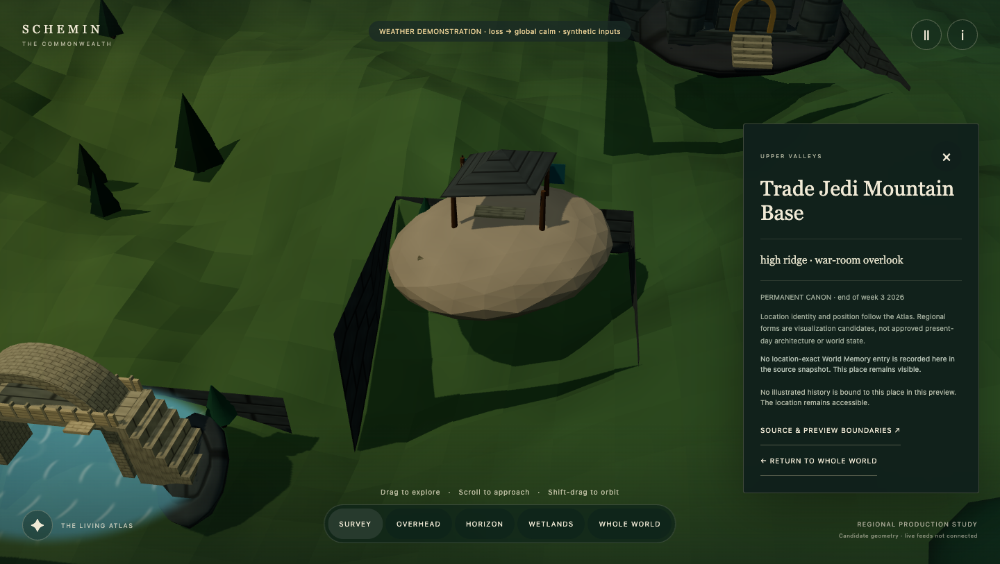
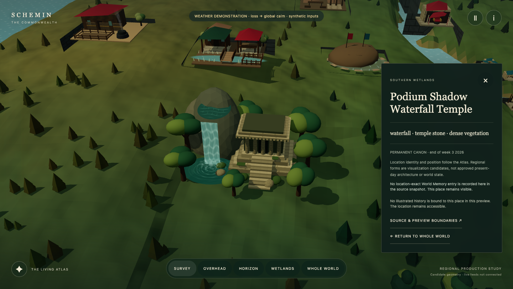
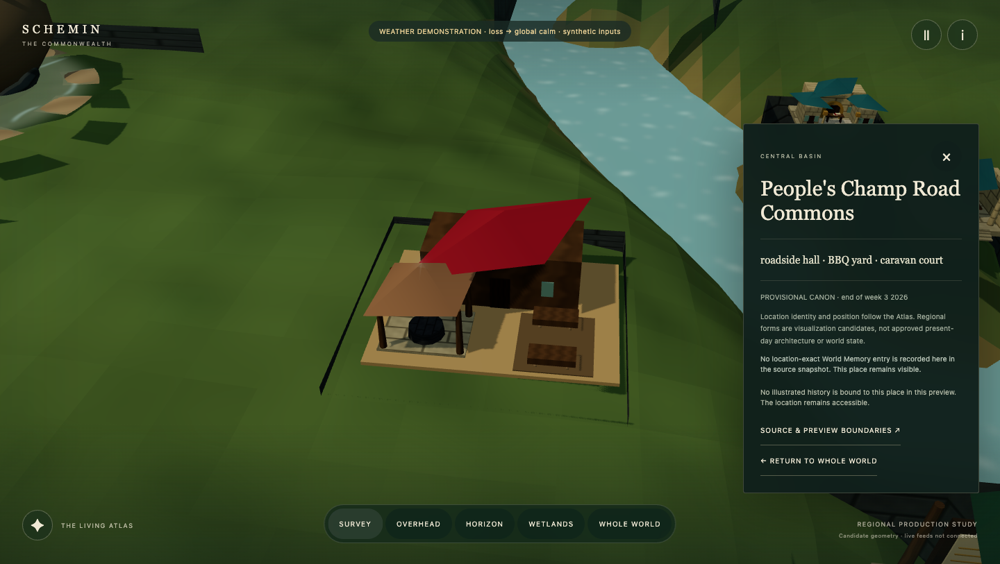
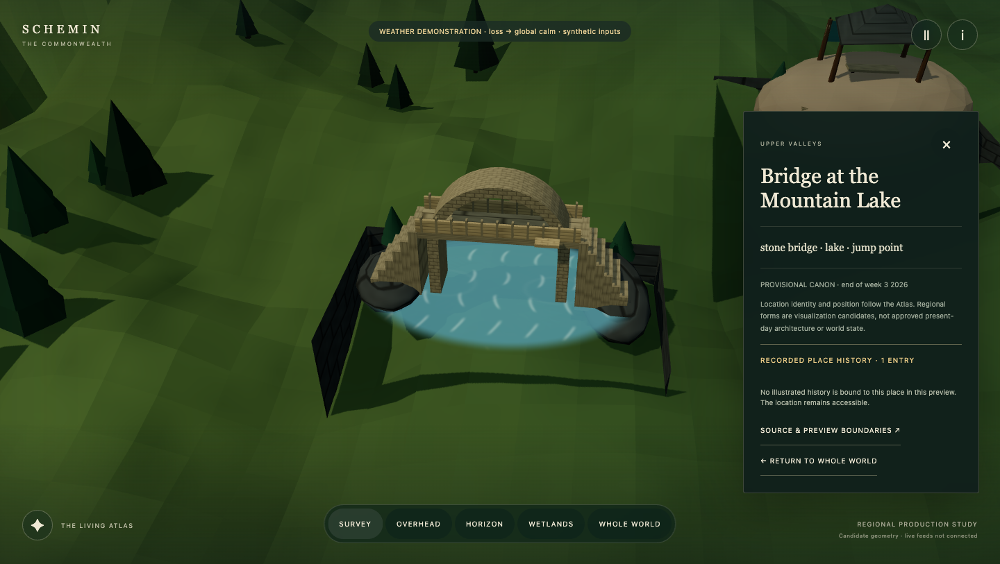
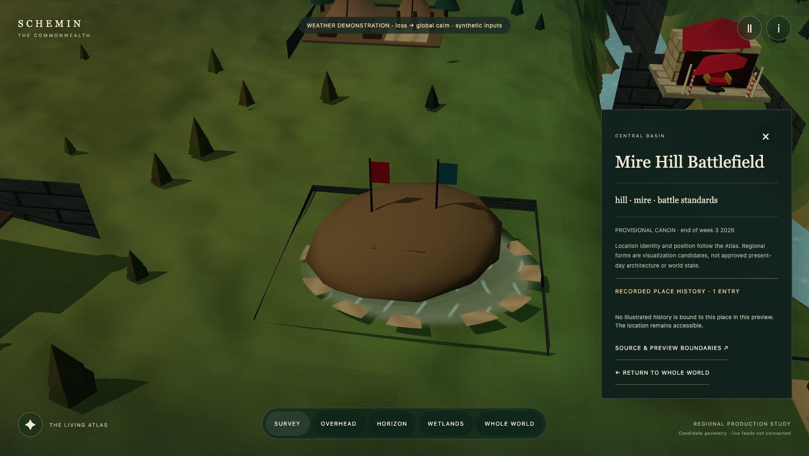
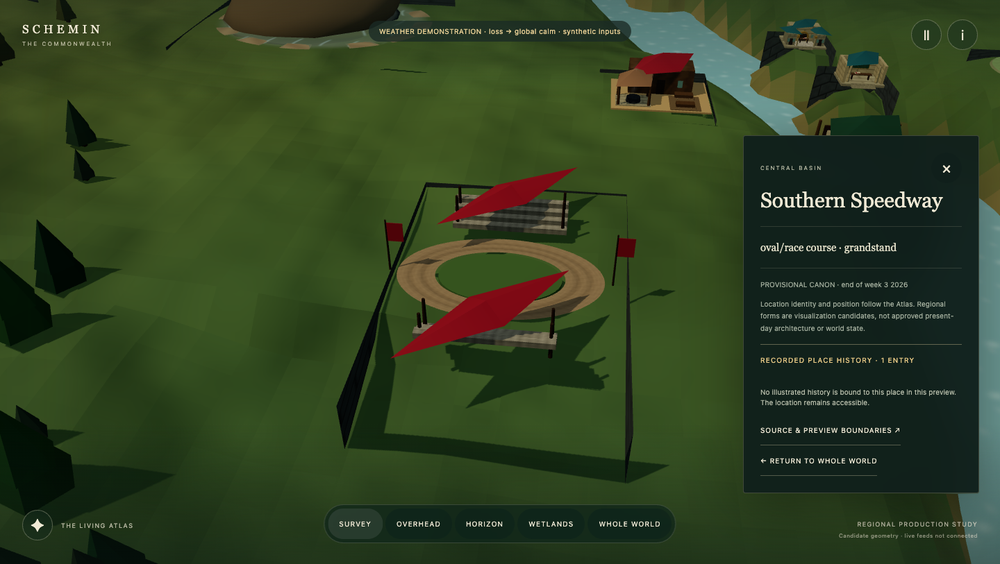
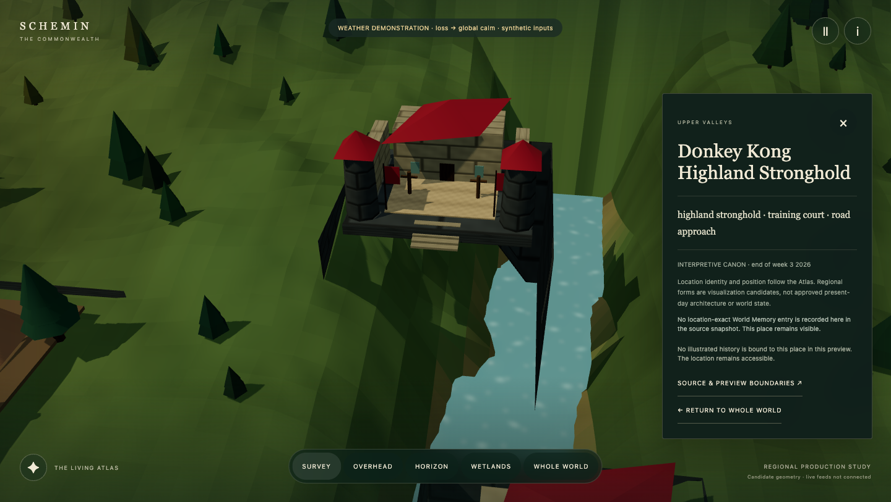
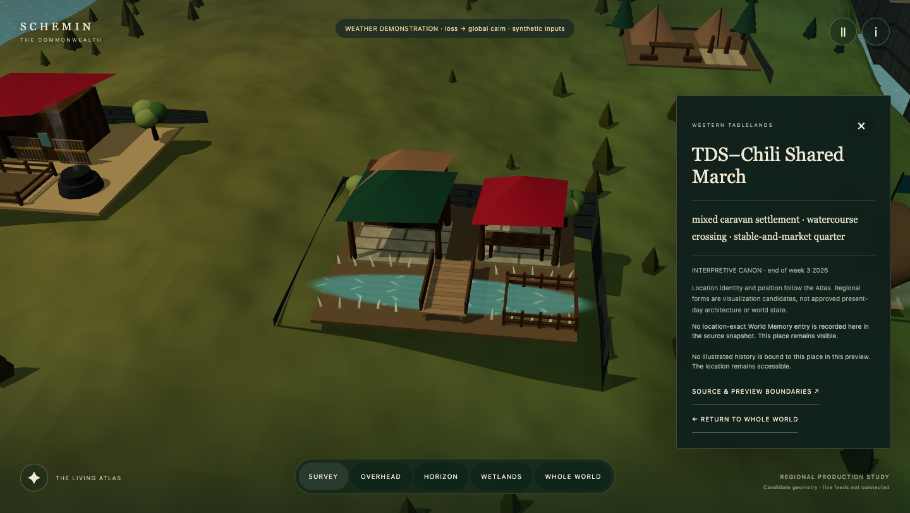
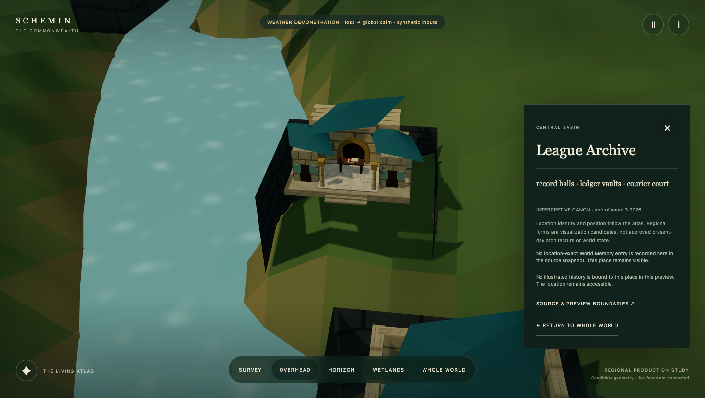

Commonwealth Atlas · 23 source places
Unpublished candidate inspection, not approved cinematic artwork. Actual opt-in physical-WebGL2 screenshots, one frame per existing Atlas place. This contact sheet is offline and read-only. It does not claim a water-only motion proof, canonical geometry, current live weather, creator acceptance, or a release.
Source revision: 7a03257e0bf745a18819a0aa97506b988c6f149a · state as recorded: end_of_week_3_2026 · renderer: three-webgl2 · observed GPU: ANGLE (Apple, ANGLE Metal Renderer: Apple M3 Pro, Unspecified Version)























